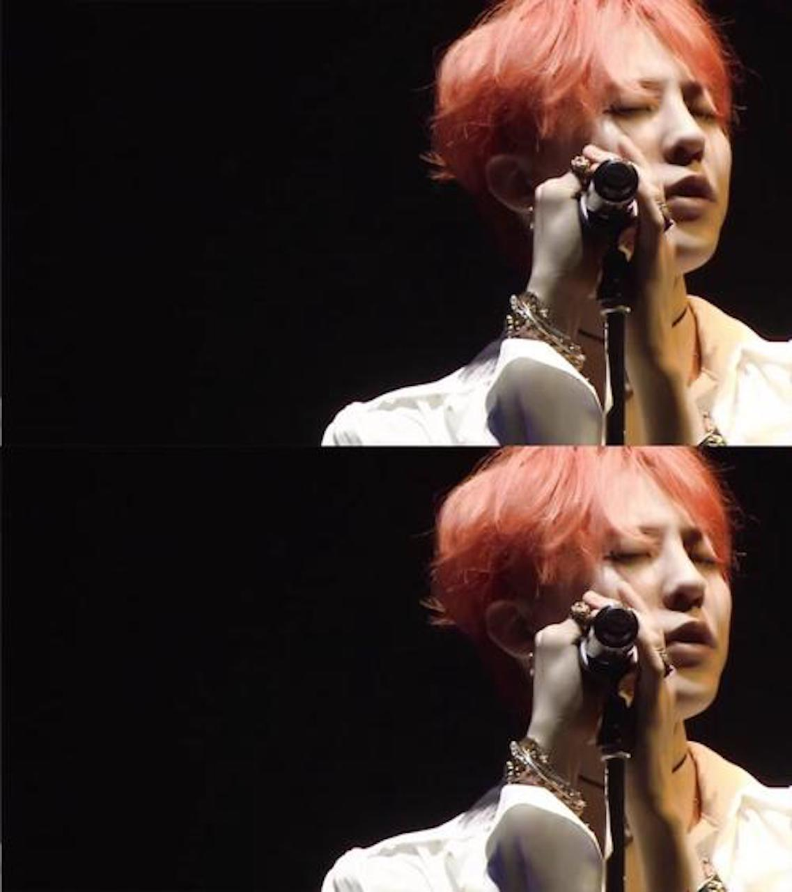
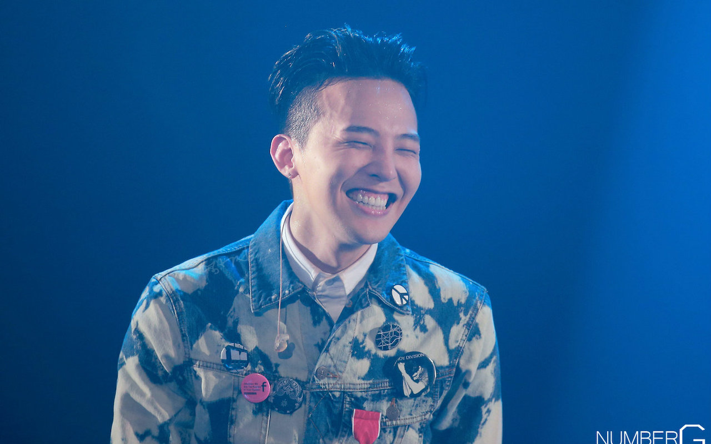

个人写真



韩国歌手、饶舌者及词曲作者。他以艺名G-DRAGON，是YG娱乐旗下男子团体BIGBANG之队长。
2006年，18岁时以新人Hip-hop偶像组合BIGBANG的队长正式出道，并于团体中担任主Rapper和副主唱。
现今的他为韩国YG娱乐主要制作人之一。
权志龙就读韩国贵族学校首尔崇义小学 、首尔国乐艺术中学 和议政府通讯情报高中(演技专业)。
2009年2月21日，权志龙和成员大声参加两天一夜的庆熙大学入学式正式成为庆熙大学艺术设计学院后现代音乐学系学生。
2018年2月6日据韩国媒体Dispatch报道：权志龙目前已从韩国世宗大学流通学硕士毕业。
2018年2月27日，入伍服役，现身位于江原道新兵训练所。 2019年10月26日上午，权志龙完成国防义务后从龙仁陆军地面作战司令部退伍。
| 专辑 | 专辑资料 | 曲目 |
|---|---|---|
| 1st |
|
|
| 2nd |
|
Part.1
Part.2 附加曲目（仅在实体发行)） |
| 年份 | 名称 | 备注 |
|---|---|---|
| 2006年8月29日 | This Love | 收录于BIGBANG 首张单曲《BIGBANG》 |
| 2007年11月22日 | But I love U | 收录于BIGBANG 第2张迷你专辑《Hot Issue》 |
| 2008年12月30日 | 나만바라봐 Part 2(Look Only At Me Part 2) | 收录于BIGBANG Limited《BIGBANG Limited Edition》 |
| 2010年11月9日 | Gmarket party | 《G-Market》广告曲 |
| 2010年12月24日 | 어쩌란 말이냐?(What Do You Want?) | 收录于GD&TOP 正规专辑《GD&TOP》 |
| 2010年12月24日 | 악몽 Obsession | 收录于GD&TOP 正规专辑《GD&TOP》 |
| 2012年12月5日 | あんなヤツ / That xx(JPN Ver.) | 收录于BIGBANG日本巡演纪念特别专辑《SPECIAL FINAL IN DOME MEMORIAL COLLECTION》 |
| 2013年4月1日 | 疯狂GO/미치GO | 为了纪念自己的首次世界巡演而创作的单曲 |
| 2013年8月17日 | 撼动世界세상을 흔들어 (Shake The World) | 收录于个人第二张正规专辑《COUP D'ETAT 》为节目WIN: WHO IS NEXT 主题曲 |
| 年份 | 奖项 |
|---|---|
| 2007 | 第9届Mnet KM Music Video Festival- 编曲赏 |
| 2009 |
|
| 2012 |
|
| 2013 |
|
| 2014 |
|
| 2015 |
|
1988年8月18日，权志龙出生于韩国首尔特别市龙山区梨泰院，上有一名姐姐，为家里的小儿子。5岁时参演儿童综艺节目《BOBOBO》还演出电影《太行山下》， 6岁时年以小孩组合ROORA出道，并且登上了蚕室演唱会的舞台。8岁时在滑雪场的舞蹈比赛中取得冠军，并被当时的主持人李秀满发掘并在SM娱乐开始练习生生涯。
12岁时因热爱Hip-hop而转投现在的经纪公司YG娱乐。从中三开始接受创作型歌手训练，作业是每周写一首歌。 练习时间合共为11年(SM娱乐+YG娱乐)。在练习生时代多次作为YG Family的成员登台表演，
初次登台于2001年大韩民国HipHop Flex。练习生时曾为同公司前辈Se7en的伴舞。